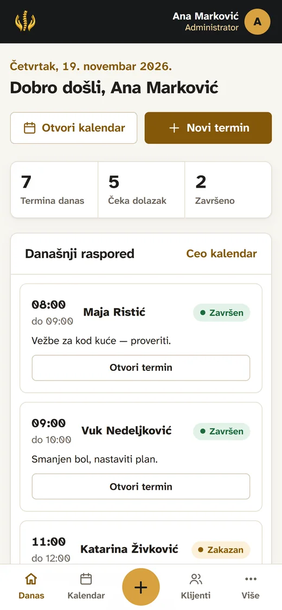
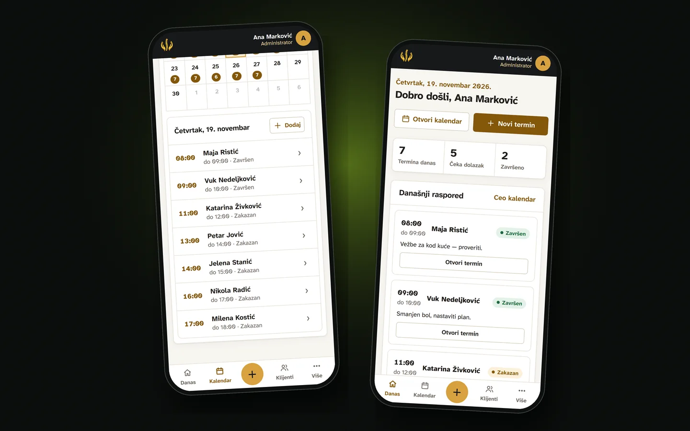
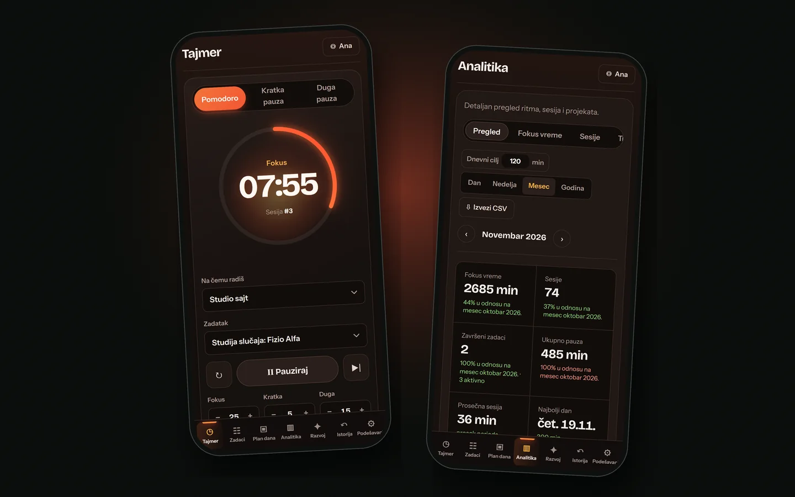

Product strategy
The problem, the priorities, a clear plan.
Taking on new projects · Novi Sad
Web apps for scheduling, clients and payments, built for the way you actually work.
Studio
BARVIS is the name I work under, independently, in Novi Sad, Serbia. I run the first conversation, design the workflow and write the code myself, so nothing gets lost between idea, design and development, and you always know who you're talking to.


A shared calendar, client records and a clear view of who owes what, in one place.
See the clinic system → Salons, studios, repair shopsBooking without double appointments, client history and a clear daily schedule.
Talk about your booking → Small teams and companiesAn internal tool that follows your real process: data entry, approvals and reports.
Describe your process →I don't just sell a screen. I build the logic behind it.
The problem, the priorities, a clear plan.
Fast flows, no visual noise.
From the database to the app.







A finished system.
Not just design or code.
Built around your process. Works on desktop and mobile.
Server setup, data migration and backups.
A short session and simple guides for your staff.
Fixes, improvements and new features as you grow.
from €500
A modern, fast website for your company or service, built for phones and ready for Google.
from €2,000
An app like Fizio Alfa: scheduling, clients, payments and reports, built for your process.
from €50 / month
So the system keeps running while you focus on your business.
Your budget
A different idea or a tighter budget? We agree on a scope and a price that work for you.
05 / How I work
First we understand the business, then we write code.
Free, 30 minutes: how you work today and where you lose time.
What gets built, in what order and by when, before we start.
Development in short rounds; after each one you see a working version.
Testing, training, launch and stabilisation.

06 / About
I'm a final-year Computing and Control Engineering student at the Faculty of Technical Sciences in Novi Sad. I build software I'd want to use myself: clear, fast and shaped around real work.
I work directly with every client, from the first conversation through launch and ongoing support. No middlemen, nothing lost in translation.
A custom system starts at around €2,000 and a website at €500. The exact amount depends on scope: how many screens, users and integrations with other tools you need. After a free call you get a written quote with a price and timeline, before any commitment.
We get a first usable version to you as early as possible, then refine it with your feedback. The exact timeline is in the quote.
Your existing data can be moved into the new system, so you don't start from zero.
The system can run on your own server or a private network, accessible only to your team, with regular backups. It's built in line with Serbian and EU data-protection principles, and I'm happy to sign an NDA on request, which matters especially for health data.
Yes. Every system is built for both desktop and mobile from the start.
I'm there for fixes, improvements and new features. We agree on a support plan that fits your pace.
Yes. Calls and communication in English work just as well, and the system's interface can be in your language.
08 / Next project
Send a few sentences. A ready-made email template opens with one click, just fill in:
I reply personally, with a concrete next step.